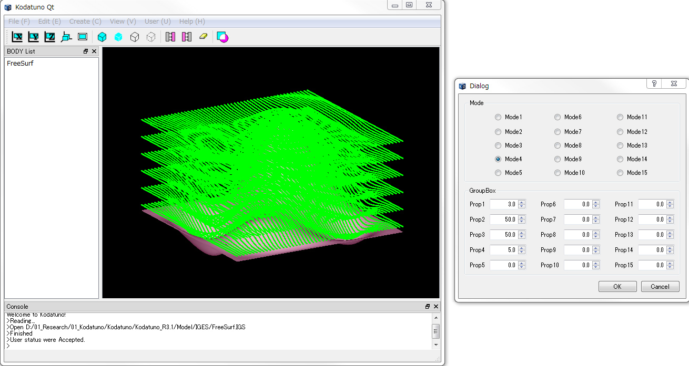

(Ex. 9) いいかげんな3xCAMの作成
これが最後の例題になります．最後は，これまでの例題の総括として簡単な（いいかげんな）3xCAMを作ってみたのでご紹介します．
＜実行手順＞
- Kodatunoアプリケーションを起動し, 適当なIGESデータを1つ読み込みます．
- 表示されたBodyから面->エッジの順で1つずつピックします．
- "User Status"からMode4を選択し，Prop1にボールエンドミル半径，Prop2にスキャニングライン分割数(< 100)，Prop3に素材上面のZ座標，Prop4にZ方向分割数（粗加工用）をそれぞれ入力します．
- "Sample Func 3"ボタンを押します．
- スキャニングパスが生成されたことを確認してください．

＜ソース解説＞
今回はModeは関係なく，"Sample Func4"ボタンを押しました．これによってExecSampleFunc3()-->Smp3xCAM()が実行されます．
では，Smp3xCAM()を見てみましょう．
// Sample9: スキャンパスを生成するシンプルな3xCAM
void Smp3xCAM(NURBSS *S,NURBSC *C,double R,int N,double H,int D)
{
NURBS_Func nf; // NURBS_Funcへのインスタンス
double green[3] = {0,1,0}; // 描画するパスの色（緑）
Coord plane_pt; // 分割する平面上の1点
Coord plane_n; // 分割する平面の法線ベクトル
Coord path_[2000]; // 一時格納用バッファ
Coord ***path = NewCoord3(D+1,N+1,2000); // 生成されたパスを格納
int ptnum[100]; // スキャンライン1本ごとの加工点数を格納
int flag = 0; // ジグザグパス生成時の方向転換用フラグ
// ガイドカーブに沿って垂直平面をシフトしていき，加工面との交点群を求めていく
for(int i=0;i<=N;i++){
double t = (double)i/(double)N;
if(i==0) t += 0.0001; // 特異点回避
else if(i==N) t-= 0.0001; // 特異点回避
plane_pt = nf.CalcNurbsCCoord(C,t); // 注目中の垂直平面上の1点
plane_n = nf.CalcTanVecOnNurbsC(C,t); // 注目中の垂直平面の法線ベクトル
ptnum[i] = nf.CalcIntersecPtsPlaneSearch(S,plane_pt,plane_n,0.5,3,path_,2000,RUNGE_KUTTA); // 交点群算出
// 得られた交点群を，加工面法線方向に工具半径分オフセットさせた点を得る
for(int j=0;j< ptnum[i];j++){
Coord pt = nf.CalcNurbsSCoord(S,path_[j].x,path_[j].y); // 工具コンタクト点
Coord n = nf.CalcNormVecOnNurbsS(S,path_[j].x,path_[j].y); // 法線ベクトル
if(n.z < 0) n = n*(-1); // 法線ベクトルの向き調整
path[D][i][j] = pt + n*R; // 工具半径オフセット
}
}
// 粗加工パス生成
for(int i=0;i< D;i++){
for(int j=0;j< N+1;j++){
for(int k=0;k< ptnum[j];k++){
double del = (H - path[D][j][k].z)/(double)D;
double Z = H - del*(double)i;
path[i][j][k] = SetCoord(path[D][j][k].x,path[D][j][k].y,Z);
}
}
}
// path描画
for(int i=0;i< D+1;i++){
for(int j=0;j< N+1;j++){
for(int k=0;k< ptnum[j];k++){
DrawPoint(path[i][j][k],1,1,green);
}
}
}
// NCコード生成(各条件は各自で変更ください)
double ret = H + 10; // リトラクトZ
FILE *fp = fopen("demo.nc","w");
fprintf(fp,"G92X0.0Y0.0Z0.0\n");
fprintf(fp,"S4000M03\n");
fprintf(fp,"F500\n");
for(int i=0;i< D+1;i++){
fprintf(fp,"G00X%.2lfY%.2lfZ%.2lf\n",path[i][0][0].x,path[i][0][0].y,ret);
for(int j=0;j< N+1;j++){
if(flag == 0){
for(int k=0;k< ptnum[j];k++){
fprintf(fp,"G01X%.2lfY%.2lfZ%.2lf\n",path[i][j][k].x,path[i][j][k].y,path[i][j][k].z);
}
}
else{
for(int k=ptnum[j]-1;k >=0;k--){
fprintf(fp,"G01X%.2lfY%.2lfZ%.2lf\n",path[i][j][k].x,path[i][j][k].y,path[i][j][k].z);
}
}
flag = 1 - flag;
}
fprintf(fp,"G01Z%.2lf\n",ret);
}
fprintf(fp,"G01Z%.2lf\n",ret);
fprintf(fp,"M05\n");
fprintf(fp,"M30\n");
fclose(fp);
}
基本的には「平面と曲面との交線算出」と「曲面上の法線算出」の組み合わせで事足りてしまいます（14〜28行目）．それ以降の，どのような工具経路とするかはあなた次第！
この例では2番目にピックした曲線をガイドカーブとして，それに沿う形でジグザグパスを生成しています．相対パス上に"demo.nc"が正しく生成されていることを確認してみてください．
以上で例題は全て終わりです．次のセクションはこれまでの経験を生かして，簡単なアプリケーションを自分で作ってみる練習問題になっていますので，ぜひお試しください．